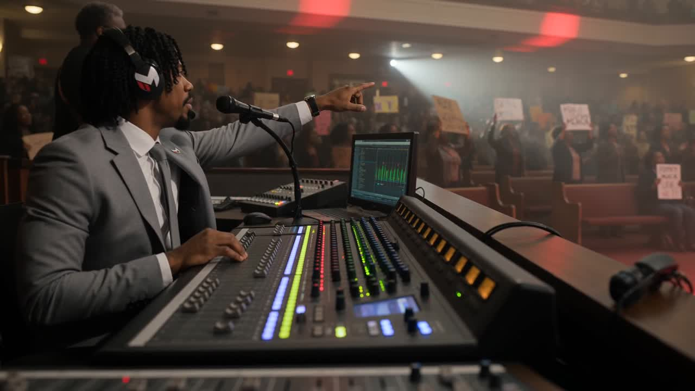
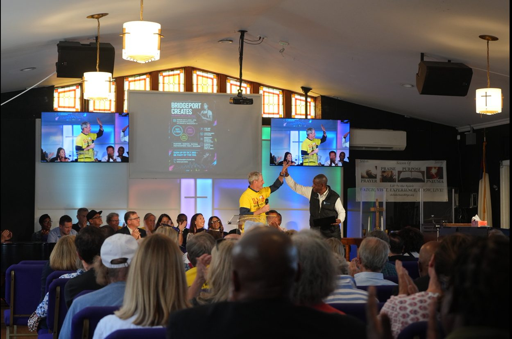

Open your private link
Matthew McCluster sends each invited fellow a private, single use link. Opening it with your M Account is your acceptance.

By invitation only
The Equity Uprise Fellowship
Equity Uprise is an invite-only fellowship for artists, musicians and makers who turn what their community needs into work people can hear. There is no open enrollment. Every fellow is invited, or asks for an invitation and is accepted by the desk.
The pitch
A fellow picks one change their community needs and makes something out of it: a song, a verse, a beat, a recording. Then the cohort brings that work in front of people, together. That was Cohort 1's mission, Write the Change, and it is the 2026 cohort's mission too.
How you get in
A fellowship seat is given, not bought and not claimed. That keeps every cohort small enough to make real work together.
Matthew McCluster sends each invited fellow a private, single use link. Opening it with your M Account is your acceptance.
When the desk opens requests, a signed in member can tell us the change they want to see. A person on the desk reads every request and accepts or declines it.
Accepted people finish three steps: the fellow agreement, a short intro and a work plan. The last step seats you in the cohort.
Cohort 1 · 2025
Songs about the changes our communities need, created by the Equity Rise 2025 cohort and brought together for a live capstone showcase.
Cohort 1 ran under the name Equity Rise. Participation is confirmed by Matthew McCluster as organizer; it is not an identity check.
The Equity Rise Graduation & Showcase at Shiloh Baptist Church, 477 Broad Street, Bridgeport, Connecticut.

The next cohort
The 2026 cohort forms before December 31, 2026, by invitation. Its mission is the one Cohort 1 carried: Write the Change. Fellows will be named on the cohort page once they accept; none are announced yet.
Forms by December 31, 2026.
If you were invited
Open the private link from your invitation, sign in with your M Account, and tell us the change you want to see. If you have not been invited, you can ask when requests are open.
Equity Uprise is the civic program of McCluster Corp. The missions on the World stay open to everyone; the fellowship is by invitation.